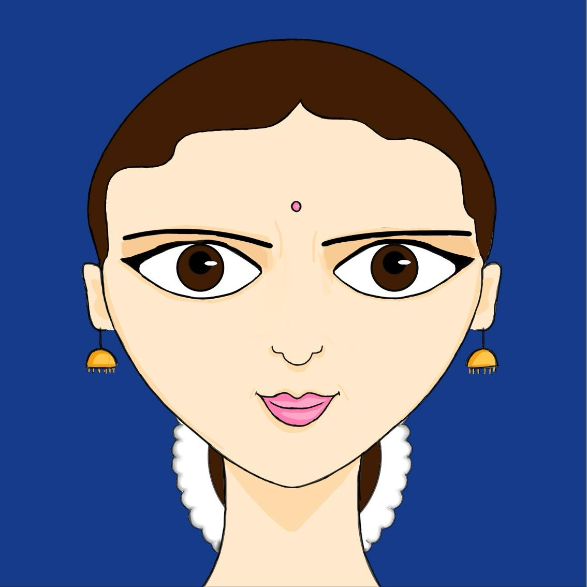
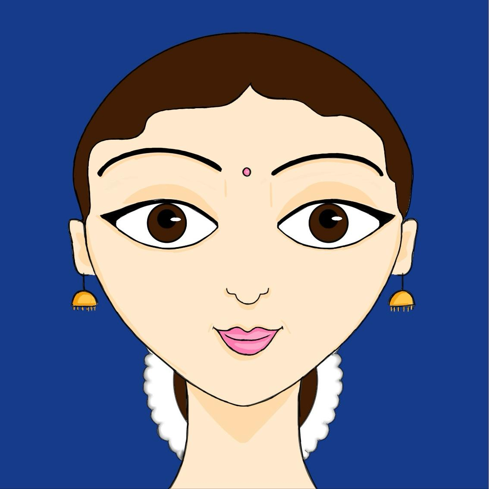
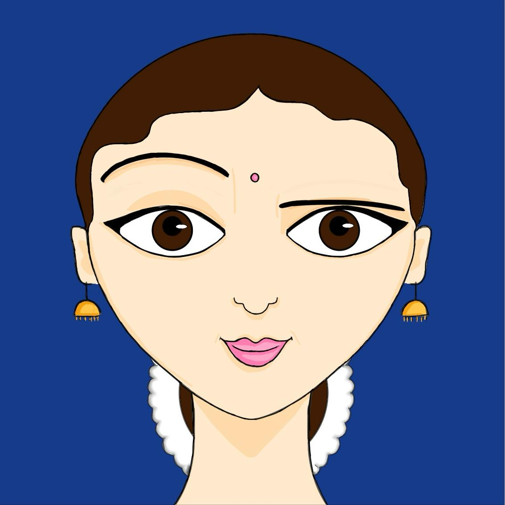
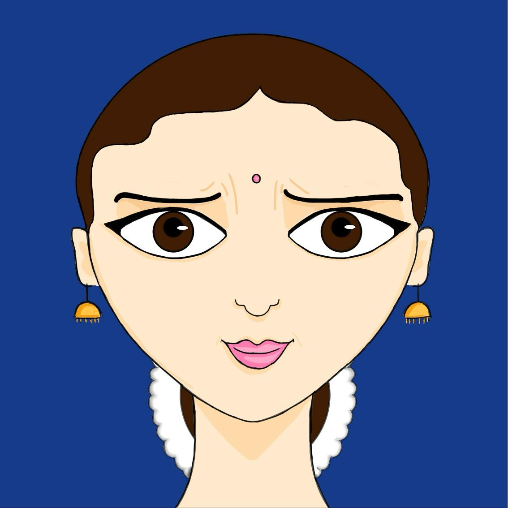

Sahajaa
Keeping eyebrows normal, without any movement.
Used to express a natural, calm, or neutral expression.
Bhru bheda refers to the eyebrow movements used in Bharathanatyam. According to the Abhinaya Darpana, there are 6 types of eyebrow movements:
Sahaja Patito Utkshipta
Chathura Rechitha tatha
Kunchithethi
Shadevaatra Bhru chaathuryavathi kriyaah

Keeping eyebrows normal, without any movement.
Used to express a natural, calm, or neutral expression.

The brows are at rest and then lowered.
Used to hatred, jealousy, or distaste.

Raising both eyebrows up.
Used to anger, surprise, or love.
Shaking both eyebrows slightly.
Used to excitement, happiness or love.

Raising one eyebrow in a stylish manner.
Used to listen to a secret or react with charm.

Bending the eyebrows down together or one by one.
Used to show desire, love, doubt or anger.
Illustrations and animations by Varnika Bhaskar.